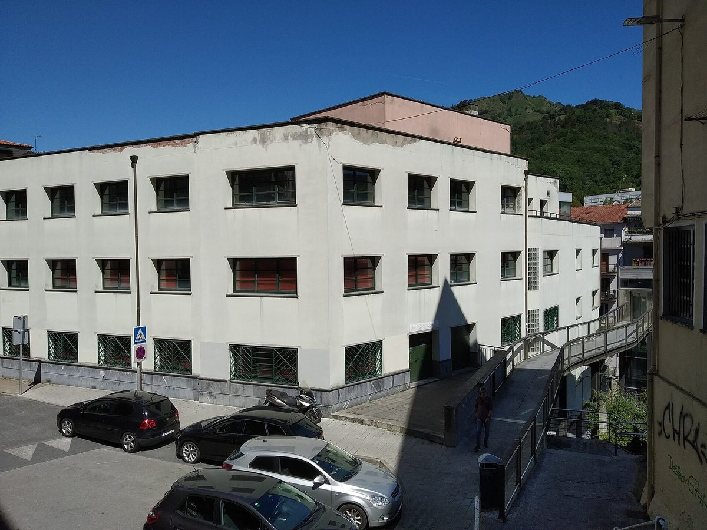

스페인 에이바르 에너지공동체, 시 건물 지붕 3곳 태양광에 조합원 90명 더 모은다

시청이 학교·문화회관 지붕 1,093㎡ 내줘 패널 364장 설치…가정·상점·중소기업 200곳 참여, 추천 가입하면 둘 다 회비 3개월 면제
스페인 바스크 지방 기푸스코아주 에이바르의 지역 에너지공동체 'TEK 에이바르'가 시 건물 지붕에 올린 태양광의 발전 용량을 다 채우기 위해 새 조합원 90명 모집에 나섰다. 에이바르 시청은 이 사업을 이끌며 포르탈레아 문화회관과 아라테코 안드라 마리 학교, 아마냐 학교 등 시 건물 지붕 3곳의 쓸 수 있는 면적 1,093㎡를 공동체에 내줬고, 그 위에 태양광 패널 364장이 설치됐다. 공동체는 마을 안에서 만든 100% 재생에너지를 여러 이용자가 함께 쓰는 공동 자가소비 방식이며, 가입은 협동조합 조합원이 되는 형태로 이뤄진다. 지금까지 가정·상점·중소기업 200곳이 조합원으로 참여했고, 시는 11월 9일 상점용 온라인 설명회, 10일 콜리세오 극장, 12일 에레발에서 대면 설명회를 연다. 조합원이 지인을 추천해 가입하면 추천한 사람과 새 조합원 모두 회비 3개월을 면제받는 '친구 추천' 제도도 마련했으며, 한 사람이 최대 4명까지 추천할 수 있다. 욘 이라올라 에이바르 시장은 조합원 200명 달성이 "더 가깝고 지속가능한 에너지 방식"에 대한 관심을 보여 준다고 말했다.
시민에너지 관점
에이바르 시는 발전소를 직접 소유하지 않고 지붕 사용권만 내줬지만, 그 덕에 학교와 문화회관 지붕 1,093㎡가 주민 200곳이 함께 쓰는 동네 발전소가 됐다. 스페인에서는 2010년 카탈루냐 지로나에서 시작한 재생에너지 협동조합 솜 에네르지아(Som Energia)처럼 시민이 조합원으로 전기를 함께 만들고 사는 흐름이 이미 자리를 잡아 왔다. 공공 지붕을 민간에 내주면 특혜가 아니냐는 우려도 있지만, 지붕의 혜택이 특정 업체가 아니라 가입 문이 열린 협동조합의 조합원 모두에게 돌아간다면 그것은 공공자산을 주민에게 돌려주는 일이다. 우리 지자체도 학교·주민센터·문화시설 지붕을 임대 입찰로만 넘기지 말고, 주민이 조합원으로 참여하는 공동체에 먼저 내주는 길을 열어야 한다.
출처: Noticias de Gipuzkoa 2026-10-27 Aitor Zabala 원문 보기
スペイン・エイバルのエネルギー共同体、市有施設の屋根3か所の太陽光で組合員90人を追加募集
市が学校・文化会館の屋根1,093㎡を提供しパネル364枚を設置…家庭・商店・中小企業200件が参加、紹介加入なら双方の会費3か月無料
スペイン・バスク地方ギプスコア県エイバルの地域エネルギー共同体「TEK エイバル」が、市有施設の屋根に設置した太陽光の発電容量を使い切るため、新たな組合員90人の募集を始めた。事業を主導するエイバル市役所は、ポルタレア文化会館、アラテコ・アンドラ・マリ校、アマニャ校の市有施設3か所の屋根のうち使用可能な1,093㎡を共同体に提供し、そこに太陽光パネル364枚が設置された。共同体は町内でつくった100％再生可能エネルギーを複数の利用者で分け合う集合自家消費の仕組みで、加入は協同組合の組合員になる形をとる。これまでに家庭・商店・中小企業の200件が組合員として参加しており、市は11月9日に商店向けのオンライン説明会、10日にコリセオ劇場、12日にエレバルで対面の説明会を開く。組合員が知人を紹介して加入すれば、紹介した人と新組合員の双方の会費が3か月無料になる「友だち紹介」制度も設け、1人あたり最大4人まで紹介できる。ジョン・イラオラ市長は、組合員200人の達成は「より身近で持続可能なエネルギーの形」への関心の表れだと述べた。
市民エネルギーの視点
エイバル市は発電所を自ら所有せず屋根の使用権を提供しただけだが、それによって学校と文化会館の屋根1,093㎡が住民200件で共有する町の発電所になった。スペインでは、2010年にカタルーニャ州ジローナで始まった再エネ協同組合ソム・エネルジア（Som Energia）のように、市民が組合員として電気を共につくり買う流れがすでに根づいてきた。公共の屋根を民間に貸せば特恵ではないかとの懸念もあるが、その恩恵が特定の業者ではなく、加入の門が開かれた協同組合の組合員全員に届くのであれば、それは公共資産を住民に返すことだ。韓国の自治体も、学校・住民センター・文化施設の屋根を賃貸入札だけで手放さず、住民が組合員として参加する共同体にまず提供する道を開くべきだ。
出典: Noticias de Gipuzkoa 2026-10-27 アイトル・サバラ（Aitor Zabala） 原文を読む
西班牙埃瓦尔能源共同体依托3处市属建筑屋顶光伏，再招募90名社员
市政府提供学校和文化中心屋顶1,093平方米，安装光伏板364块…家庭、商店和中小企业200户参与，推荐入社双方各免3个月会费
西班牙巴斯克地区吉普斯夸省埃瓦尔市的地方能源共同体"TEK Eibar"为用足市属建筑屋顶光伏的发电容量，开始招募90名新社员。主导该项目的埃瓦尔市政府把波尔塔莱亚文化中心、阿拉特科·安德拉·马里学校和阿马尼亚学校等3处市属建筑屋顶的可用面积1,093平方米交给共同体使用，上面已安装光伏板364块。该共同体采用集体自发自用模式，由多个用户共同使用本地生产的100%可再生电力，加入方式是成为合作社社员。目前已有家庭、商店和中小企业共200户入社。市政府将于11月9日为商户举办线上说明会，10日在科利塞奥剧院、12日在埃雷巴尔举办线下说明会。共同体还推出"好友推荐"办法：社员推荐熟人入社，推荐人和新社员各免3个月会费，每人最多可推荐4人。埃瓦尔市长Jon Iraola表示，社员达到200人，说明人们关注"更贴近、更可持续的能源方式"。
市民能源视角
埃瓦尔市并不自己拥有电站，只是让出屋顶使用权，但学校和文化中心的1,093平方米屋顶因此成了200户居民共用的社区电站。在西班牙，像2010年在加泰罗尼亚赫罗纳起步的可再生能源合作社Som Energia那样，市民以社员身份共同发电、共同购电的做法早已扎根。有人担心把公共屋顶交给民间是变相优待，但如果好处不是归于某家企业，而是归于入社大门敞开的合作社全体社员，那就是把公共资产还给居民。韩国的地方政府也不应只通过租赁招标出让学校、居民中心和文化设施的屋顶，而应优先交给居民以社员身份参与的共同体。
来源: Noticias de Gipuzkoa 2026-10-27 Aitor Zabala 查看原文
Spanish town of Eibar's energy community seeks 90 more members for solar on three municipal roofs
Town hall handed over 1,093 square metres of school and cultural-centre roofs for 364 panels; 200 households, shops and small firms have joined, and referrals earn both sides three months' free fees
TEK Eibar, the local energy community of Eibar in the Basque province of Gipuzkoa, Spain, has launched a drive to recruit 90 new members so it can use the full generating capacity of the solar panels on municipal roofs. Eibar town hall, which leads the project, ceded the use of 1,093 square metres of usable roof space on three municipal buildings — the Portalea cultural centre, Arrateko Andra Mari school and Amaña school — where 364 solar panels have been installed. The community runs on collective self-consumption, with several users sharing 100% renewable power produced inside the town, and joining means becoming a member of a cooperative. So far 200 households, shops and small businesses have signed up, and the town will hold an online briefing for shops on 9 November and in-person sessions at the Coliseo theatre on 10 November and at Errebal on 12 November. A "refer a friend" scheme gives both the referring member and the newcomer three months of free fees, with up to four referrals per member. Mayor Jon Iraola said reaching 200 members showed interest in "a closer and more sustainable" way of using energy.
Citizen Energy View
Eibar does not own the plant itself; it simply handed over the right to use its roofs, and that alone turned 1,093 square metres of school and cultural-centre roofs into a neighbourhood power station shared by 200 local members. In Spain, citizens producing and buying electricity together as co-op members is already well established, as shown by Som Energia, the renewable energy cooperative founded in Girona, Catalonia, in 2010. Some may worry that handing public roofs to private hands is a favour, but when the benefit goes not to a single company but to every member of a cooperative whose doors stay open, it is a way of returning public assets to residents. Korean local governments, too, should stop treating school, community-centre and cultural-facility roofs only as lease tenders and first offer them to communities in which residents take part as members.
Source: Noticias de Gipuzkoa 2026-10-27 Aitor Zabala Read the original